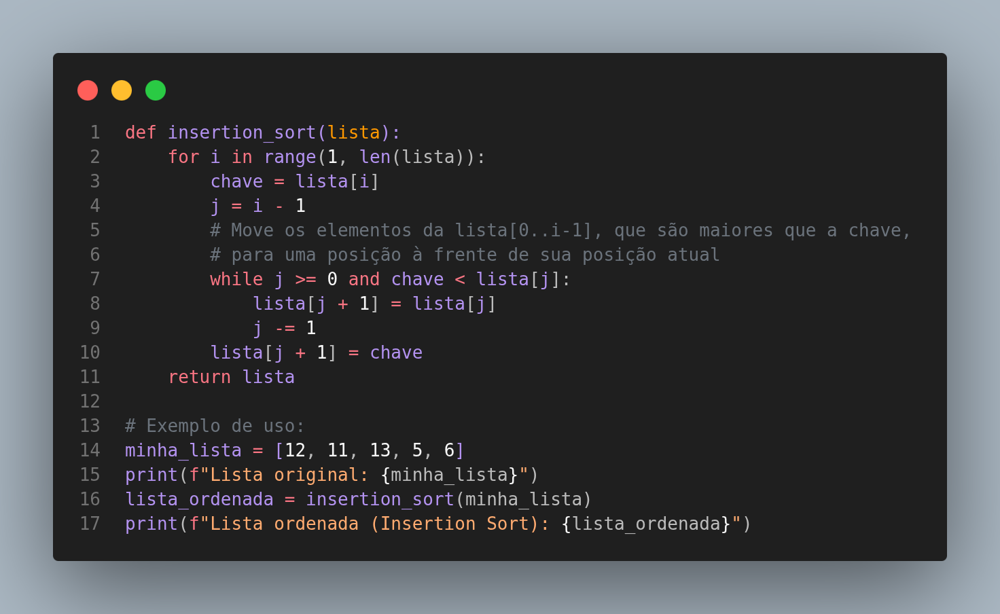

O Insertion Sort, ou Ordenação por Inserção, constrói a lista ordenada um item por vez, inserindo cada elemento na sua posição correta dentro da sublista já ordenada. É um algoritmo eficiente para conjuntos de dados pequenos ou para listas que já estão quase ordenadas.
Analogia: A melhor analogia para o Insertion Sort é a forma como você organiza um baralho de cartas na sua mão. Você pega uma carta de cada vez e a insere na posição correta entre as cartas que você já tem na mão, que já estão ordenadas.
